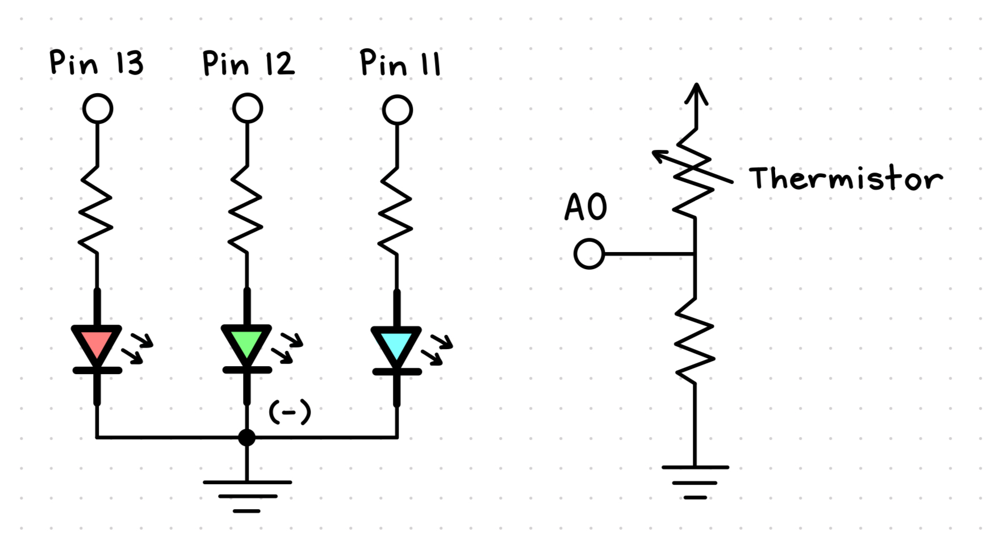
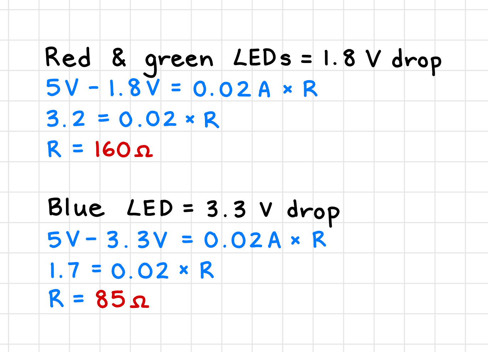
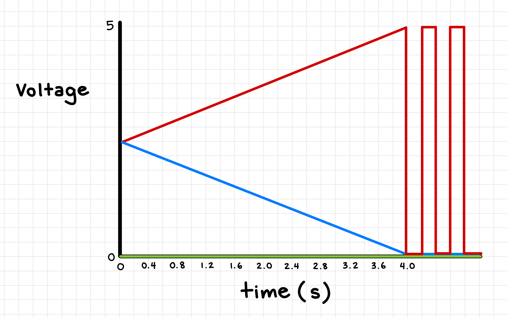

Assignment 3: Input Output!
Schematic and Circuit
This assignment required that our circuit uses a sensor (e.g. either the photoresistor or the thermistor)
in a voltage divider to change the state of an output device (which cannot be a single LED).
The sensor must change its resistance given some change in the physical world, and the voltage divider
must have an appropriate resistance value.
To satisfy the assignment requirements, I decided to use a thermistor as a sensor that will detect changes in temperature in
the physical world. For the output device, I chose to use a RGB LED because it technically combines multiple LEDs
(red, green, and blue) into one. Furthermore, I wanted changes in temperature to change the color of the RGB LED.
A warm temperature will make the LED turn red, while a cool temperature will make the LED turn blue.
My schematic
To the left of my schematic is the RGB LED. It is connected to 3 digital pins (13, 12, and 11) on the Arduino,
which powers each of the 3 LED colors (red, green, and blue). In between each pin and LED is also a resistor
which limits the current. Finally, the common cathode (the longest leg) of the RGB LED is connected to the
ground pin on the Arduino.
To the right of my schematic is the voltage divider. It consists of a thermistor and resistor, and it is
connected to the 5V pin, analog pin A0, and ground pin on the Arduino.

My circuit
My circuit is built according to the schematic above. For the voltage divider, a yellow wire connects the
5V pin on the Arduino to a thermistor on the breadboard. The other leg of the thermistor is connected to a resistor,
which is then connected to the ground rail on the breadboard with a black wire. Finally, an orange wire connects
analog pin A0 on the Arduino to the thermistor at the same side as the other resistor.
Beside the voltage divider is the RGB LED, and its red, green, and blue LED legs connect to digital pins 13, 12, and 11
on the Arduino. The common cathode leg of the RGB LED is also connected to the ground rail on the breadboard,
and a final black wire from that ground rail connects to the ground pin on the Arduino to tie the entire circuit together.

Calculating resistance
To calculate what resistance values to use for the RGB LED, I used Ohm's law (V = IR) to solve for R.
For each of the LEDs, I looked up the voltage drop for their color and subtracted that value
from the Arduino's operating voltage of 5V. Alongside the desired current of 20mA, I was able to
calculate the resistance needed for the red, green, and blue LEDs. Finally, I used the calculated
resistance to find the resistor inside my Arduino starter kit with the next highest value.
In the end, I used a 220 ohm resistor for the red and green LEDs and a 100 ohm resistor for the blue LED.

To determine what resistor value to use for the thermistor inside the voltage divider, I measured its resistance
using a multimeter at different temperatures. I found that the thermistor at room temperature measured around 10k ohms.
When I blew warm air onto it, the resistance dropped slightly, and it also increased when I blew cold air onto it.
However, the resistance changes were not very significant and remained close to 10k ohms.
Therefore, I chose a resistor value of 10k ohms to pair with the thermistor in the voltage divider.
Code Snippet
I built my code off the example sketch that was shown in lecture, which used a photoresistor and a single LED. When the
photoresistor sensed more light, the LED would turn brighter, and when the photoresistor sensed less light, the LED would dim.
I modified this code to work with my thermistor and RGB LED so that when the thermistor senses a warm temperature, the RGB LED
turns red, and when the thermistor senses a cool temperature, the RGB LED turns blue.
The first few lines of my code sets up the constants and variables that will be used. This includes the pin numbers for the thermistor
and RGB LED, as well as variables to store the sensor value, lowest and highest measured values, and the mapped value. In the setup function,
the RGB LED pins are initialized as outputs, and the serial monitor is started.
Inside the void loop, the thermistor value is read using analogRead() and constrained to the highest and lowest measured values.
I found these high and low values by first writing the sensor value to the serial monitor and observing the output at different temperatures.
I found that when I warmed the thermistor between my fingers, it increased the value to around 575, so I set that as the high value.
Similary, I placed a frozen grape against the thermistor and found that the value dropped to around 475, which I set as the low value. Finally,
I used the constrain method to limit the sensor value to the range between the high and low values.
I then used the map() function to map the low value to 0 and the high value to 255, which is the range that the
RGB LED expects for its color values. Because I wanted the RGB LED to turn more red as the temperature increased, I set
the red value equal to the mapped function. This way, when the mapped value is 255, the red LED will be fully on, and when
the mapped value is 0, the red LED will be off. Likewise, I set the blue value equal to the inverse of the mapped function.
When the mapped value is 255, the blue LED will be off, and when the mapped value is 0, the blue LED will be fully on.
To set the RGB LED at a certain color, I borrowed code from the
Arduino Project Hub to implement the setColor() function. This function takes the 3 red, green, and blue values and
uses analogWrite() to set the brightness of each LED. Finally, I wrote an if-statement that will cause the RGB LED
to flash on and off when the mapped value reaches its highest or lowest value.
// constants that are used to set pin numbers:
const int analogPin = A0; // the number of the thermistor pin
const int redPin = 13; // the number of the RGB LED red pin
const int greenPin = 12; // the number of the RGB LED green pin
const int bluePin = 11; // the number of the RGB LED blue pin
// variables that will change:
int sensorValue; // int variable for the value measured by the thermistor
int lowValue; // int variable for the lowest measured value
int highValue; // int variable for the highest measured value
int mappedValue; // int variable for the mapped value
void setup() {
// initialize the RGB LED pins as an output:
pinMode(redPin, OUTPUT);
pinMode(greenPin, OUTPUT);
pinMode(bluePin, OUTPUT);
// initialize the serial monitor:
Serial.begin(9600);
}
void loop() {
// the value measured by the thermistor is stored in sensorValue
// the sensorValue is constrained to the lowest and highest measured values
sensorValue = analogRead(analogPin);
lowValue = 475;
highValue = 575;
sensorValue = constrain(sensorValue, lowValue, highValue);
// the sensorValue is mapped with the lowValue to 0 and highValue to 0 and stored in mappedValue
// the red, green, and blue values in the RGB LED are set according to the mappedValue
mappedValue = map(sensorValue, lowValue, highValue, 0, 255);
int redValue = mappedValue;
int greenValue = 0; // -(mappedValue/63.75)*(mappedValue-255);
int blueValue = 255 - mappedValue;
setColor(redValue, greenValue, blueValue);
// if the mappedValue is at the lowest or highest value, the LED will flash on and off
if (mappedValue == 0 || mappedValue == 255) {
setColor(0, 0, 0);
delay(200);
setColor(redValue, greenValue, blueValue);
delay(200);
}
// sensorValue, mappedValue, and color is written to the serial monitor
Serial.print("Sensor value: ");
Serial.print(sensorValue);
Serial.print("\t Mapped value: ");
Serial.print(mappedValue);
Serial.print("\t Color: ");
Serial.print(redValue);
Serial.print(", ");
Serial.print(greenValue);
Serial.print(", ");
Serial.println(blueValue);
}
// function that sets the RGB LED at the given red, green, and blue values
// code from https://projecthub.arduino.cc/semsemharaz/interfacing-rgb-led-with-arduino-b59902
void setColor(int redValue, int greenValue, int blueValue) {
analogWrite(redPin, redValue);
analogWrite(greenPin, greenValue);
analogWrite(bluePin, blueValue);
}
You can download my full code as an Arduino file here!
Circuit Operation
Below are some gifs that showcase my circuit in operation. To get the thermistor to the highest constrained value, I hold it between
my fingers for a few seconds. To get it to the lowest constrained value, I took a frozen grape from my freezer and held it against
the thermistor.
Originally, I had a green value that would be at 255 in the middle of the mapped value range, and then drop to
0 at both of the lowest and highest ends. The idea was to create a whiter color at the center of the temperature range, but upon
trying it out, I found that the color shifts couldn't happen smoothly and instead jumped from one color to another. Therefore, I
ended up just setting the green value to 0 so that the color shift from red to blue could happen more smoothly. So in the end,
the green pin inside the RGB LED isn't really neccessary for the final design of my circuit!
Additional Questions
1: In your voltage divider, can the variable resistor be either R1 or R2 or does it need to be
one or the other? Justify your answer with example calculations.
Yes, the variable resistor (thermistor) could either be R1 or R2 because of the way voltage is calculated inside a voltage divider.
The equation, V(out) = R2/(R1+R2) * V(in), measures what the voltage would be between the two resistors. For our example calculations,
let's use 5V for V(in) and 10 ohms for R1. R2 would represent the variable resistor, so it can range between 8-12 ohms.
If R2 = 8 ohms, V(out) = 2.22 V. If R2 = 10 ohms, V(out) = 2.5 V. If R2 = 12 ohms, V(out) = 2.73 V. As R2 increases, V(out) increases.
Now, let's flip R1 and R2 so that R2 stays at 10 ohms and R1 ranges between 8-12 ohms.
If R1 = 8 ohms, V(out) = 2.78 V. If R1 = 10 ohms, V(out) = 2.5 V. If R1 = 12 ohms, V(out) = 2.27 V. As R1 increases, V(out) decreases.
However, when R1 = R2, V(out) is the same for both orientations, and they both also reach the same values at highest and lowest point.
Therefore, the thermistor could either be R1 or R2, but changing the postition would cause a change in whether the voltage rises
or falls with temperature.
2: Draw a graph where the x-axis is time and the y-axis is voltage.
Plot the voltage at V-measure of your voltage divider of your shared gif.
My graph represents the gif where I warm up the thermistor until the RGB LED flashes red.

3: AnalogWrite and analogRead are respectively 8-bit and 10-bit values. Imagine you had 10-bit PWM
and a 16-bit analog-to-digital converter instead. How would this change your map() code? Explain your answer.
I would change my map() code so the last 2 varibles would be (0, 1023) instead of (0, 255)!